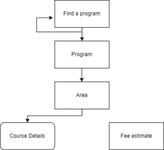

PROGCAT overview
Banner Online Programme Catalogue (PROGCAT) allows institutions to display programme information (including details that are associated with the program sub-requirements, courses, and scheduled classes) in the unsecured Self-Service pages. You can also use this module to configure your online programme catalogue to meet your institution’s needs.
The module also includes functionality to calculate a student program fee estimate based on program, major, domicile, mode of attendance and year of attendance, and to display this fee estimate in Self-Service. PROGCAT provides web pages for the following:
- Details about programme requirements
- Displaying fee estimates
You can deploy the Web pages in the unsecured and secured part of your Self- Service implementation to allow potential students to learn more about your programmes and fees. When a user accesses a programme page, the elements of the programme (such as areas, groups, and courses) are displayed in a tree structure.
You can also deploy PROGCAT Faculty and Advisor Self-Service pages. In PROGCAT Faculty and Advisor Self-Service, users to whom permission is granted can modify some of the details of the programme elements.
Every institution has different needs, and to cater to the various needs, PROGCAT provides a flexible solution that requires modifications to meet your institution’s particular needs. Therefore, this module delivers ‘template’ web pages that can be customised using the Self-Service Engine (SSEN). For example, if you want to display the lower section of the Fee Estimate page only on the secure area of Self-Service while allowing the upper section to be available in both the secure and the insecure areas.
- Change the informational text and field labels displayed on the pages
- Change the data displayed
- Change the order of the items displayed
- Change the pages to reflect the method that you use in Banner Curriculum, Advising, and Program Planning (CAPP) to store programme narrative and requirements
PROGCAT uses information that is entered in the CAPP module. If your institution is not using the CAPP module for degree evaluations, you need to create information in CAPP forms for use in the Programme Catalogue module or you need to modify the pages to retrieve data from your local tables. Refer to the Set Up Information in the CAPP module to learn more about the steps involved in the set up activities.
PROGCAT provides the pages that allow a Self-Service user to find a programme, drill down into the requirements, and link into the Banner Self-Service Course Catalogue as shown in the following process flow diagram that shows the structure of the PROGCAT Self-Service pages:

Prerequisites
- Banner Student 8.23
- Banner PROGCAT 8.1.2.1
- Banner Common DB Upgrade 9.26
Procedures
Use the PROGCAT setup procedures.
Banner Faculty Self-Service (PROGCAT module pages)
Set up PROGCAT data in CAPP
You can set up or modify data in the CAPP module for use in the Programme Catalogue module.
About this task
Procedure
Set up fee rules
The Fee Generation Estimate page requires that fee rules for the Banner term codes against which you want to estimate fees are set up.
About this task
Procedure
- Access the Registration Fee Assessment Rules (SFARGFE) page.
- Define the fee assessment rules for each term for which you want to allow fee estimates.
Define PROGCAT configurations
You can define the PROGCAT configurations.
Procedure
Grant Access to programme updates
You can grant access to a faculty member user to be allowed to make changes to programme details in PROGCAT Faculty and Advisor Self-Service.
Procedure
Grant access to area updates
You can grant access to a faculty member user to be allowed to make changes to the area details in PROGCAT Faculty and Advisor Self-Service.
Procedure
Grant access to course updates
You can grant access to a faculty member user to be allowed to make changes to the course details in PROGCAT Faculty and Advisor Self-Service.
Procedure
Inactivate user access
You can temporarily inactivate update access a user.
Procedure
PROGCAT Self-Service pages
Fee Estimation
The Fee Estimation page is available from your dashboard. There is no login requirement to access this page.
You can select the criteria from the drop-down lists to use in calculating the fee estimate. For example, if you want to know how much your institution would charge an overseas, first-year student to study for a BA in Anthropology starting in 202209. No student data needs to exist for this type of fee estimate.
You can use this page for an existing student with a PIDM to estimate fees based on the student’s Admission, Recruiting, or Student record. Student, applicant, or recruit data must exist for this type of fee estimate.
Setup requirements
Use the Registration Fee Assessment Rules (SFARGFE) page to set up the Fee Estimation page.
Define the fee assessment rules for each term for which you want to allow fee estimates using the SFARGFE page.
Web page fields
- The Student Attribute field displays the attribute of the student, such as Full-time First Year, 30 Credits per Year. The values in this field are pulled from the Student Attribute Validation (STVATTS) page.
- The Campus field displays the name of the campus. The values in this field are pulled from the Campus Code Validation (STVCAMP) page.
- The Student Class field displays the class year, such as First-Year Medical or Graduate. The values in this field are pulled from the Class Code Validation (STVCLAS) page.
- The Major field displays the major field of study. The values in this field are pulled from the Major, Minor, Concentration Code Validation (STVMAJR) page.
- The Minor field displays the minor field of study. The values in this field are pulled from the Major, Minor, Concentration Code Validation (STVMAJR) page.
- The Concentration field displays the student's area of concentration.
- The Program field displays the name of the program such as BA in Anthropology or Postgraduate Diploma in Law, etc. The values in this field are pulled from the Program Definitions Rules (SMAPRLE) page.
- The Rate field displays the fee assessment rate. The values in this field are pulled from the Student Fee Assessment Rate Validation (STVRATE) page.
- The Residency field displays the residency status, such as EEA National or Resident of EU State, etc. The values in this field are pulled from the Residence Code Validation (STVRESD) page.
- The Student Type field displays the type of student such as New First Time or Transfer, etc. The values in this field are pulled from the Student Type Code Validation (STVSTYP) page.
- The Fee Assessment Term field displays the term for the fee assessment. The values in this field are pulled from the Term Code Validation (STVTERM) page.
- The Admission Term field displays the term of admission. The values in this field are pulled from the Term Code Validation (STVTERM) page.
- The Fee Assessment Credit Points field displays the fee assessment credit points used in the fee estimate. The values in this field are pulled from the Registration Fee Assessment Rules (SFARGFE) page.
- The Fee Estimate field displays the monetary amount of the fee based on the values in the other fields in this section. This field does not display a value until you select the Generate Fee Estimate button.
- The Fee Rate field displays the fee assessment rate. The values in this field are pulled from the Student Fee Assessment Rate Validation (STVRATE) page.
- The Fee Estimate field displays the monetary amount of the fee based on the values in that you enter in the other fields in this section. This field does not display a value until you select the Generate Curriculum Fee Estimate button.
Updates to Banner
This page does not update information in the Banner database.
Buttons/Icons on This Page
- Click Generate Fee Estimate to redisplay the page with the estimated fee displayed in the Generate Fee Estimate field.
- Click Generate Curriculum Fee Estimate to redisplay the page with the estimated fee displayed in the Generate Curriculum Fee Estimate field.
Links to Other Web Pages
This page does not have links to other pages.
Web Menus With Links to This Page
No menus have links to this page. If desired, you can create a menu locally or add a link to an existing menu.
Programme Catalogue
You can specify the search criteria to find a programme and to display the results of the search.
- Access the Program Catalog (9x) menu in Faculty Self-Service.
- Non-secure access to get to the Programme Catalogue Search page through Faculty Self-Service.
This page also uses curriculum rules to refine the programme base data.
Setup requirements
- Name Display Rules (GUANDSP) page: Use this page to configure your institution's preferred name and display rules.
- Term Code Validation (STVTERM) page: Review the codes and descriptions for the terms to bedisplayed in the programme catalogue, and define new ones or modify existing ones as necessary.
- Term Control (SOATERM) page: Select the Master Web Term Control check box in the Web Self-Service, Voice Response and Partner Systems section of the main window.
- Campus Code Validation (STVCAMP) page: Define or review the codes and descriptions for the campuses to be displayed in the programme catalogue.
- College Code Validation (STVCOLL) page: Define or review the codes and descriptions for the colleges to be displayed in the programme catalogue.
- Level Code Validation (STVLEVL) page: Define or review the codes and descriptions for the levels to be displayed in the programme catalogue.
- Program Requirements (SMAPROG) page: Define the general programme requirements for the programmes to be visible in the programme catalogue.
- Banner Applications Configurations (GUACONF) page: Use the GUACONF page to configure all PROGCAT settings. For more information, see the Main Configuration (GUROCFG) table.
Web page fields
Use the following fields of the page to specify your programme catalogue search criteria.
- Please select the academic term in which you are interested: Displays the academic year. The value displayed for each term is the description associated with the code on the Term Code Validation (STVTERM) page. Use the value to retrieve term-effective program requirements records from the Program Requirements (SMAPROG) page.
- Select a college: Displays the name of the college. To search all colleges, select All colleges. The values in the drop-down list come from the College Code Validation (STVCOLL) page. The value displayed for each college is the description associated with the code.
- Select a campus: Displays the name of the campus. To search all campuses, select All campuses. The values in the drop-down list come from the Campus Code Validation (STVCAMP) page. The value displayed for each campus is the description associated with the code.
- Select a level: Displays the level of study. To search all levels, select All levels. The values in the drop-down list come from the Level Code Validation (STVLEVL) page. The value displayed for each level is the description associated with the code.
The Programme field in this page displays the name of the programme. The page displays the records matching your search criteria. You cannot see any records until you enter a search criteria.
Updates to Banner
This page does not update information in the Banner database.
Links to Other Web Pages
Programme name goes to the Programme Catalogue - Programme Details page.
Web Menus With Links to This Page
No menus have links to this page.
Programme Catalogue - Programme Details
The Programme Catalogue - Programme Details page displays the requirements of the programme selected on the Programme Catalogue page.
You can see the programme requirements that are defined in the Banner Curriculum, Advising and Program Planning (CAPP) as programme structures or trees. You can expand and collapse the elements of the structure, as needed.
Setup requirements
Use the following pages to setup the Programme Catalogue - Programme Details page.
- Program Requirements (SMAPROG) page: For each programme that you want available to be displayed on this page, take the following actions.
- Create active, term-effective general requirements for the page.
- In the Program Text window, create programme text for the long description and enter LONG in the Print field.
- In the Program Text window, create narrative text for the long summary description and enter REQS in the Print field.
- Attach the defined areas to the programme. (This version of the Programme Catalogue module does not support the use of CAPP groups.)
- Area Libraries (SMAALIB) page: Define the area libraries to be attached to the programme.
- Area Requirements (SMAAREA) page: For each programme sub-requirement (for example, for each programme stage) that you want available to be displayed on this page, take the following actions.
- Create active, term-effective area requirements for the page.
- In the Area Text window, create narrative text for the area requirement and enter REQS in the Print field.
- Programme Catalogue Programme Access Control List (SKAPROO) page: Grant access to faculty member users who are to be allowed to make changes to programme details in PROGCAT Faculty and Advisor Self-Service.
Web page fields
Use the following fields of the page to specify your programme catalogue - programme details search criteria.
- The Programme field displays the name of the programme.
- The Term field displays the term associated with the programme.
- The Campus field displays the name of the campus.
- The Level of Study field displays the level of study.
- The College field displays the name of the college.
- The Degree field displays the degree associated with the programme.
- The Credit Requirement field displays the number of credits that must be successfully completed to earn the degree associated with the programme.
- The Maximum Transfer Credit Accepted field displays the maximum number of credits that can be transferred from another institution to count for the programme.
- The Maximum Elapsed Time Allowed (years) displays the maximum number of time, in years, the student can take to complete the programme.
- The Contact Persons field displays the name of any faculty member whom you can contact for more information about the programme.
- The Programme Description field displays the text description of the programme.
The Non-Course Requirements field displays the list of non-course requirements associated with the programme.
The Programme Structure field displays the structure of the programme with its elements displayed as a “tree”, with each area name displayed as a hyperlink to the Programme Catalogue - Area Details page.
Updates to Banner
This page does not update information in the Banner database.
Links to Other Web Pages
- Area goes to the Programme Catalogue - Area Details page.
- The Program breadcrumb goes to the page from which this page was accessed.
- Search Programme goes to the Programme Catalogue page.
Buttons/Icons on This Page
The page contains the following buttons/icons.
From Banner pages, whenever the corresponding supplemental pages are opened using the Edit button, the breadcrumb always specifies the actual page name followed by edit supplemental page information.
However, if you access the editable area of the page using the short cut edit button key on the previous page, then the breadcrumb omits the actual page details and only shows the supplemental page information.
- Edit Supplemental Data: Click this to go to the Programme Catalogue - Programme SupplementalData page.
- Snapshot Programme Data: Click this to go to the Programme Catalogue - Programme Snapshot page.
Web Menus With Links to This Page
No menus have links to this page.
Programme Catalogue - Area Details
The Programme Catalogue - Area Details page displays the structure of the area selected on the Programme Catalogue - Programme Details page.
Setup requirements
Use the following pages to setup the Programme Catalogue - Area Details page.
- Area Library (SMAALIB) page: Define the programme sub-requirement codes and descriptions.
- Area Requirements (SMAAREA) page: For each programme sub-requirement (for example, for each programme stage) that you want available to be displayed on this page, take the following actions.
- Create active, term-effective general requirements for the page.
- In the Area Text window, create narrative text for the area description and enter REQS in the Print field.
- Basic Course Information (SCACRSE) page: Define or review the course titles. This version of the Programme Catalogue does not support the use of Course Syllabus (SCASYLB) data.
- Subject Code Validation (STVSUBJ) page: Define or review the Subject Code and Descriptions. This version of the Programme Catalogue does not recognise the Subject Code Validation page Web Indicator.
- Program Requirements (SMAPROG) page: Attach the areas to the programmes.
- Programme CatalogueArea Access Control List (SKAAREO) page: Grant access to faculty member users who are to be allowed to make changes to area details in PROGCAT Faculty and Advisor Self-Service.
Web page fields
Use the following fields of the page to specify your programme catalogue - programme details search criteria.
- The Programme field displays the name of the programme.
- The Term field displays the term associated with the programme.
- The Area Title field displays the name associated with the area.
- The Contact Persons field displays the name of any faculty member whom you can contact for more information about the programme.
- The Area Details field displays the structure of the area with its elements displayed as a tree, with each course name displayed as a hyperlink to the Programme Catalogue - Course Details page.
Updates to Banner
This page does not update information in the Banner database.
Links to Other Web Pages
- Course Name goes to the Programme Catalogue - Course Details page for the selected course.
- The Program breadcrumb goes to the Programme Catalogue - Programme Details page.
- The Area breadcrumb goes to the page from which this page was accessed
- Search Programme goes to the Programme Catalogue page.
Buttons/Icons on This Page
Edit Supplemental Data: Goes to one of the following:- If the button is for an area, goes to the Programme Catalogue - Edit Area Supplemental Data page.
- If the button is for a group, goes to the Programme Catalogue - Edit Group Supplemental Data page.
- If the button is for a course, goes to the Programme Catalogue - Edit Course Supplemental Data page.
- If the button is for a rule, goes to the Programme Catalogue - Edit Rule Supplemental Data page.
Web Menus With Links to This Page
No menus have links to this page.
Programme Catalogue - Course Details
The Programme Catalogue - Course Details page displays the additional details of the course selected on the Programme Catalogue - Area Details page and allows users to navigate to the course detail page from the Banner Course Catalogue.
Setup requirements
Use the following pages to setup the Programme Catalogue - Area Details page.
- Area Library (SMAALIB) page: Define the programme sub-requirement codes and descriptions.
- Area Requirements (SMAAREA) page: For each programme sub-requirement (for example, for each programme stage) that you want available to be displayed on this page, take the following actions.
- Create active, term-effective general requirements for the page.
- In the Area Text window, create narrative text for the area description and enter REQS in the Print field.
- Basic Course Information (SCACRSE) page: Define or review the course titles. This version of the Programme Catalogue does not support the use of Course Syllabus (SCASYLB) data.
- Subject Code Validation (STVSUBJ) page: Define or review the Subject Code and Descriptions. This version of the Programme Catalogue does not recognise the Subject Code Validation page Web Indicator.
- Program Requirements (SMAPROG) page: Attach the areas to the programmes.
- Programme CatalogueCourse Access Control List (SKACRSO) page: Grant access to faculty member users who are to be allowed to make changes to course details in PROGCAT Faculty and Advisor Self-Service.
Buttons/Icons on This Page
- Breadcrumbs to navigate to other previously viewed pages
- Browser Back button to go to the previousl viewed page
- The Edit (Course Supplemental Data) button is available for logged in faculty user, provided permissions are given on the SKACRSO admin page.
- Program/Programme Search button resets all previous searches and takes the user back to the first page.
Web page fields
Use the following fields of the page to specify your programme catalogue - programme details search criteria.
- The Title field displays the text of the title of the course.
- The Subject field displays the text of the subject of the course.
- The Course Number field displays the course number.
- The Effective Term field displays the effective term for the course.
- The Credit Hours field displays the number of credit hours earned for the course.
- The Lecture Hours field displays the number of lecture hours earned for the course.
- The Lab Hours field displays the number of lab hours earned for the course.
- The Other Hours field displays the number of additional hours earned for the course that do not fit into one of the aforementioned hours categories.
- The Levels field displays the level of the course.
- The Division field displays the division of the course.
- The Department field displays the department the course is given in.
- The Contact Persons field displays any contact people available for the course.
- The Book Store field provides a link to your bookstore to enable students to purchase the required books for the course. You can add the URL for the bookstore.
- The Class Schedule field displays class schedule information.
- The Description field displays the text description of the course.
- The Contact Persons field displays the name of any faculty member whom you can contact for more information about the programme.
Updates to Banner
This page does not update information in the Banner database.
Web Menus With Links to This Page
No menus have links to this page.
Programme Catalogue - Class Schedule
The Programme Catalogue - Class Schedule page displays the additional details of the course selected on the Programme Catalogue - Course Details page and allows users to navigate to the Class Schedule detail page from the Banner Course Catalogue.
Web page fields
Use the following fields of the page to specify your programme catalogue - programme details search criteria.
- The Associated Term field specifies the associated term for the specified Section.
- The Registration dates field shows the registration date range for the section.
- The Levels field displays the levels associated with the section.
- The Campus field specifies the campus associated with the section.
- The Schedule Type field displays the Schedule Type associated with the section.
- The Instructional Method field displays the Instructional Method associated with the section.
- The Credits field displays the number of credit hours earned for the section.
- The Restrictions section displays the restrictions defined on the section level.
Edit Supplemental Data Pages
HTML formatting is available in the description-text areas of all of the Edit Supplemental Data pages in the Programme Catalogue.
If you have edit permissions for Programme Catalogue Supplemental Data pages, you can structure and format the descriptive text using HTML.
<a><img><font><hr><br><b><strong><i><em><mark><small><del><s><ins><u><sub><sup><pre><p><ul><li><div><span>
Programme Catalogue - Edit Program Supplemental Data
You can change the additional programme details such as primary contact person, secondary contact person, and programme description details using the Programme Catalogue - Edit Program Supplemental Data page. The page also lists other programmes for which the user has authorisation to make changes.
Setup requirements
This page has no setup requirements.
Web page fields
Use the following fields in the Programme Details section and apply to the programme that you see on the Programme Catalogue page.
- The Program field displays the name of the programme. Display only.
- The Effective Term field displays the term associated with the programme. Display only.
- The Supplemental Long Title field displays the long title of the programme.
- The Translated Supplemental Long Title field displays the translated title of the programme.
- The ID of Primary Contact Person field displays the Banner ID of the primary contact person. Click Look Up to search for an ID.
- The ID of Secondary Contact Person field displays the Banner ID of the primary contact person. Click Look Up to search for an ID.
- The Description field allows you to enter a free-form text description of the programme.
- The Translated Supplemental Description field allows you to enter a free-form translated text description of the programme.
Other Programmes you Administer
- The Programme field displays the name of the programme, displayed as a link. Click the link to view or change details for that programme. Display only.
- The EffectiveTerm field displays the term associated with the programme. Display only.
Updates to Banner
This page does not update information in the Banner database. Any changes made on this page are reflected only in Self-Service.
Links to Other Web Pages
- Programme name redisplays this page for the selected programme.
- The Program breadcrumb goes to the Programme Catalogue - Programme Details page.
Buttons/Icons on This Page
- Look Up goes to the Person Search Criteria page.
- Look Up goes to the Person Search Criteria page.
- Submit: Saves your changes and re-displays the page.
Web Menus With Links to This Page
No menus have links to this page.
Programme Catalogue - Edit Area Supplemental Data
You can change the additional area details such as primary contact person, secondary contact person, area description, and maximum number of courses and credits details using the Programme Catalogue - Edit Area Supplemental Data page. The page also lists other areas for which the user has authorisation to make changes.
Setup requirements
This page has no setup requirements.
Web page fields
Use the following fields in the Area Details section and apply to the area that was selected on the Programme Catalogue - Area Details page.
- The Title field displays the name of the area. Display only.
- The Effective Term field displays the term associated with the area. Display only.
- The Supplemental Long Title field displays the long title of the area.
- The Translated Supplemental Long Title field displays the translated title of the programme.
- The ID of Primary Contact Person field displays the Banner ID of the primary contact person. Click Look Up to search for an ID.
- The ID of Secondary Contact Person field displays the Banner ID of the primary contact person. Click Look Up to search for an ID.
- The Description field allows you to enter free-form text description of the area.
- The Translated Supplemental Description field allows you to enter a free-form translated text description of the programme.
- The Maximum Number of Credits field displays the maximum number of credits needed to satisfy the area’s requirements.
- The Boolean Connector field indicates whether both the credits required and courses required must be met or only one.
- and: Both credits required and courses required must be met
- or: Either credits required or courses required must be met, not both
- The Maximum Number of Courses field displays the maximum number of courses needed to satisfy the area’s requirements.
- The Current reading of the Area Constraints field displays the long description of the requirement. The system displays the text defined as REQS for the area in the Area Text window of the Area Requirements (SMAAREA) page.
-
The following fields are displayed in the OtherAreas You Administer section.
- The Area field displays the name of the area, displayed as a link. Click the link to view or change details for that programme. Display only.
The EffectiveTerm field displays the term associated with the programme. Display only.
Updates to Banner
This page does not update information in the Banner database. Any changes made on this page are reflected only in Self-Service.
Links to Other Web Pages
- Area name redisplays this page for the selected area.
- The Area breadcrumb goes to the ProgrammeCatalogue - Area Details page.
Buttons/Icons on This Page
- Look Up goes to the Person Search Criteria page.
- Look Up goes to the Person Search Criteria page.
- Submit: Saves your changes and re-displays the page.
Web Menus With Links to This Page
No menus have links to this page.
Programme Catalogue - Edit Group Supplemental Data
You can change the additional group details such as group description, and maximum number of courses and credits details using the Programme Catalogue - Edit Group Supplemental Data page.
Setup requirements
This page has no setup requirements.
Web page fields
Use the following fields in the Group Details section and apply to the group that was selected on the Programme Catalogue - Edit Area Details page.
- The Group Title field displays the name of the group. Display only.
- The Effective Term field displays the term associated with the group. Display only.
- The Supplemental Long Title field displays the long title of the area.
- The Translated Supplemental Long Title field displays the translated title of the programme.
- The Description field allows you to enter free-form text description of the group.
- The Translated Supplemental Description field allows you to enter a free-form translated text description of the programme.
- The Maximum Number of Credits field displays the maximum number of credits needed to satisfy the group's requirements.
- The Boolean Connector field indicates whether both the credits required and courses required must be met or only one.
- and: Both credits required and courses required must be met
- or: Either credits required or courses required must be met, not both
- The Maximum Number of Courses field displays the maximum number of courses needed to satisfy the group's requirements.
- The Current reading of the Area Constraints field displays the long description of the requirement. The system displays the text defined as REQS for the area in the Area Text window of the Area Requirements (SMAAREA) page.
Updates to Banner
This page does not update information in the Banner database. Any changes made on this page are reflected only in Self-Service.
Links to Other Web Pages
- The area breadcrumb goes to the Programme Catalogue - Area Details page.
- Group-Rule Additional constraints section
Buttons/Icons on This Page
The page has the following buttons/icons.
Look Up button goes to the Person Search Criteria page.
Submit: Saves your changes and redisplays the page.Web Menus With Links to This Page
No menus have links to this page.
Programme Catalogue - Edit Rule Supplemental Data
You can change the additional rule details such as rule description, and minimum and maximum number of sets that need to be successfully completed to satisfy the rule details using the Programme Catalogue - Group Supplemental Data page.
If the rule is a rule for a group-area, you can also record the minimum and maximum number of courses and credits.
Setup requirements
This page has no setup requirements.
Web page fields
Use the following fields in the Rule Details section and apply to the rule that was selected on the Programme Catalogue - Area Details page.
- The Rule field displays the name of the rule. Display only.
- The Area field displays the name of the area with which the rule is associated. Display only.
- The Group field displays the name of the group with which the rule is associated. Display only.
- The Effective Term field displays the term associated with the rule. Display only.
- The Supplemental Long Title field displays the long title of the rule.
- The Translated Supplemental Long Title field displays the translated title of the programme.
- The Description field allows you to enter free-form text description of the group.
- The Translated Supplemental Description field allows you to enter a free-form translated text description of the programme.
- The Min Sets field displays the minimum number of rule sets.
- The Max Sets field displays the maximum number of rule sets.
Updates to Banner
This page does not update information in the Banner database. Any changes made on this page are reflected only in Self-Service.
Links to Other Web Pages
The area breadcrumb goes to the Programme Catalogue - Edit Area Details page.
Buttons/Icons on This Page
Submit: Saves your changes and re-displays the page.
Web Menus With Links to This Page
No menus have links to this page.
Programme Catalogue - Course Supplemental Data
You can change the additional course details such as primary contact person, secondary contact person, course long title, and course description. You can also list other courses for which the user has authorisation to make changes.
Setup requirements
This page has no setup requirements.
Web page fields
Use the following fields in the Course Details section and apply to the course that was selected on the Programme Catalogue - Area Details page.
- The Base Title field displays the name of the course. Display only.
- The Subject field displays the subject of the course, such as Accounting or Humanities. Display only.
- The Course Number field displays the number of the course. Display only.
- The Effective Term field displays the term associated with the course. Display only.
- The Supplemental Long Title field displays the long title of the course.
- The Translated Supplemental Long Title field displays the translated title of the programme.
- The ID of Primary Contact Person field displays the Banner ID of the primary contact person. Click Look Up to search for an ID.
- The ID of Secondary Contact Person field displays the Banner ID of the primary contact person. Click Look Up to search for an ID.
- The Description field allows you to enter free-form text description of the course.
The following fields are displayed in the Other Courses You Administer section.
- The Course Title field displays the name of the course, displayed as a hyperlink you can click toview or change details for that course. Display only.
- The Course Number field displays the number of the course. Display only.
- The Effective Term field displays the term associated with the course. Display only.
Updates to Banner
This page does not update information in the Banner database. Any changes made on this page are reflected only in Self-Service.
Links to Other Web Pages
- Course name redisplays this page for the selected course.
- The area breadcrumb goes to the Programme Catalogue - Area Details page.
Buttons/Icons on This Page
- Look Up Change ID of Primary Contact Person goes to the Person Search Criteria dialog.
- Look Up Change ID of Secondary Contact Person goes to the Person Search Criteria page dialog.
- Submit: Saves your changes and redisplays the page.
Web Menus With Links to This Page
No menus have links to this page.
XML Export
The XML Export option is available if the logged in user has edit permissions for the selected program.
You can use the XML Export option to use the data for other purposes, such as creating printed materials (For example, include in prospectuses and brochures about the programmes and courses on offer).
Programme Catalogue - Person Search
You can search the Banner database for faculty member IDs. Use the % character as a wild card.
Setup requirements
This page has no setup requirements.
Web page fields
The page has the following web page fields.
- The Surname Prefix field displays the prefix of the surname on which to search.
- The Last Name field displays the last name on which to search.
- The First Name field displays the first name on which to search.
- The Middle Name field displays the middle name on which to search.
You can see the following fields in the page after you perform a search that includes all records that match the search criteria.
- The ID field displays the faculty member’s Banner ID.
- The Name field displays the name associated with the Banner ID.
Updates to Banner
This page does not update information in the Banner database. Any changes made on this page are reflected only in Self-Service.
Links to Other Web Pages
ID goes to the page from which this page was accessed and inserts the selected ID in the ID of Primary Contact Person or ID of Secondary Contact Person field, as appropriate.
Buttons/Icons on This Page
- Submit: Saves your changes and redisplays the page.
- X: Goes to the page from which this page was accessed without changing the values in the ID of Primary Contact Person or ID of Secondary Contact Person field.
Web Menus With Links to This Page
No menus have links to this page.
Programme Catalogue - Programme Snapshot
The Programme Catalogue - Programme Snapshot allows you to refresh the Online Programme Catalogue data structures from the latest CAPP data for the selected programme and term.
Setup requirements
The Programme Snapshot has no setup requirements. It is available from a link on the Programme Details page form which you can extract the latest CAPP data and take a snapshot of it.
Web page fields
There are no fields on this web page.
Updates to Banner
This page does not update information in the Banner database.
Links to Other Web Pages
This page does not have links to other pages.
Buttons/Icons on This Page
- Yes, Extract: Refreshes the data structures and goes to the Programme Catalogue - Programme Details page.
- No, Cancel: Goes to the Programme Catalogue - Programme Details page without refreshing the data structures.
Web Menus With Links to This Page
No menus have links to this page.
Seed data for PROGCAT
Template solutions are available as seed data scripts in various tables for PROGCAT.
Main Configuration (GUROCFG) table
Seed data for PROGCAT available in the GUROCFG table.
| Config Name | Config Value | Description | Type |
|---|---|---|---|
| banner.progcat.area.longdesctranslated | N | Indicates if the translated description is editable on the Area supplemental page. | string |
| banner.progcat.area.longtitletranslated | N | Specifies whether the system should allow Edit of translated long title on Area supplemental page. | string |
| banner.progcat.bookstore.label | Proceed to Bookstore | Bookstore Information Label. The bookstore website is external to Banner Web. | string |
| banner.progcat.bookstore.url | https://www.ellucian.com/ | Bookstore Information URL. The bookstore website is external to Banner Web. | string |
| banner.progcat.course.longdesctranslated | N | Specifies whether the system should allow Edit of translated description on Course supplemental page. | string |
| banner.progcat.course.longtitletranslated | N | Specifies whether the system should allow Edit of translated long title on Course supplemental page. | string |
| banner.progcat.dispconstr | Y | Display Constraint messages. | string |
| banner.progcat.dispcrdare | 999 | Display Credit for Area. | string |
| banner.progcat.dispcrdcrs | 999D9 | Display credit for Course. | string |
| banner.progcat.dispcrdgrp | 999 | Display Credit for Group. | string |
| banner.progcat.dispcrdprg | 999D9 | Banner/concept code for to be retrieved | string |
| banner.progcat.dispcrdrul | 999 | Display Credit for Rule. | string |
| banner.progcat.dispcrn | Y | Display CRNs of Courses. | string |
| banner.progcat.dispenroll | Y | Display Enrollment Counts. Use this to specify whether the system should display enrollment counts on Class Schedule page. Valid values are Y and N. | string |
| banner.progcat.dispwl | Y | Display Waitlist Counts. Use this to specify whether the system should display waitlist counts on Class Schedule page. Valid values are Y and N. | string |
| banner.progcat.dispxl | Y | Display crosslist Counts. Use this to specify whether the system should display crosslist counts on Class Schedule page. Valid values are Y and N. | string |
| banner.progcat.group.longdesctranslated | N | Specifies whether the system should allow Edit of translated description on Group supplemental page. | string |
| banner.progcat.group.longtitletranslated | N | Specifies whether the system should allow Edit of translated long title on Group supplemental page. | string |
| banner.progcat.program.longdesctranslated | N | Specifies whether the system should allow Edit of translated description on Program supplemental page. | string |
| banner.progcat.program.longtitletranslated | N | Specifies whether the system should allow Edit of translated long title on Program supplemental page. | string |
| banner.progcat.refresh | N | Auto-refresh of ProgCat Trees. | string |
| banner.progcat.rule.longdesctranslated | N | Specifies whether the system should allow Edit of translated description on Rule supplemental page. | string |
| banner.progcat.rule.longtitletranslated | N | Specifies whether the system should allow Edit of translated long title on Rule supplemental page. | string |
Web Tailor Repeating Menu Item (TWGRMENU) table
PROGCAT menu item is available in the TWGRMENU table.
| Menu Name | url Text | Source |
|---|---|---|
| bmenu.P_FacMainMenu | Program Catalog (9x) page | B |